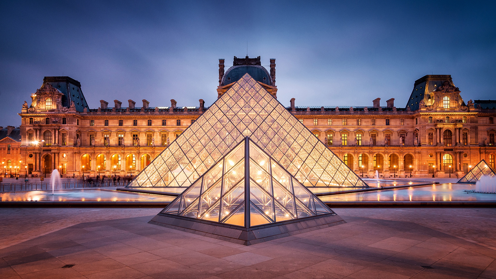

PARIS
Torre Eifel

La Torre Eiffel es uno de los monumentos más icónicos y visitados en el mundo, ubicado en París, Francia. Construida en 1889 por el ingeniero Gustave Eiffel como parte de la Exposición Universal, la torre es un impresionante ejemplo de la arquitectura y la ingeniería de la época.
Con una altura de 324 metros, la Torre Eiffel ofrece vistas espectaculares de París desde sus tres plataformas de observación. Los visitantes pueden subir a la torre en ascensores o por las escaleras, y una vez en la cima pueden disfrutar de vistas panorámicas de la ciudad.
Además de ser una atracción turística popular, la Torre Eiffel ha sido utilizada en muchas películas y programas de televisión, convirtiéndose en un símbolo de la cultura francesa y la ciudad de París en todo el mundo.
En resumen, la Torre Eiffel es una maravilla arquitectónica que ofrece impresionantes vistas de París y es una visita obligada para cualquier turista que visite la ciudad.
Notre Dame

La Catedral de Notre Dame es uno de los monumentos más emblemáticos de París, Francia. Construida en estilo gótico en el siglo XII, la catedral es famosa por su arquitectura impresionante y su historia rica y fascinante.
La catedral es conocida por su icónica fachada, que presenta numerosas esculturas y vidrieras que representan escenas bíblicas y figuras históricas. Además, su interior es impresionante, con bóvedas altas, vitrales de colores brillantes y una gran variedad de artefactos religiosos.
Lamentablemente, en 2019, un incendio devastador afectó a la catedral, destruyendo gran parte de su techo y aguja. Desde entonces, se han llevado a cabo esfuerzos masivos de restauración y reconstrucción, con la esperanza de devolver la catedral a su antigua gloria.
En resumen, la Catedral de Notre Dame es un tesoro arquitectónico y cultural en el corazón de París, y su historia y belleza siguen siendo una fuente de fascinación para visitantes de todo el mundo.
Louvre
El Louvre es uno de los museos más grandes e importantes del mundo, situado en el corazón de París, Francia. Con más de 35,000 obras de arte en exhibición, desde la antigüedad hasta el siglo XIX, el museo es un verdadero tesoro cultural.
El edificio del Louvre, que en su origen fue una fortaleza medieval, es impresionante por sí mismo, con su icónica Pirámide de cristal diseñada por el arquitecto I.M. Pei en la entrada principal. Entre las obras más famosas que se pueden encontrar en el museo están la Mona Lisa de Leonardo da Vinci, la Venus de Milo y la Victoria alada de Samotracia.
Además de las impresionantes colecciones permanentes, el Louvre también presenta exposiciones temporales de arte de todo el mundo. Los visitantes pueden pasar horas explorando las galerías y salas del museo, descubriendo tesoros artísticos y culturales en cada esquina.
En resumen, el Louvre es una visita imprescindible para cualquier amante del arte y la cultura, y su colección y arquitectura lo hacen un destino turístico fascinante y memorable.
Arco del Triunfo

El Arco del Triunfo es uno de los monumentos más famosos y emblemáticos de París, Francia. Situado en el extremo oeste de los Campos Elíseos, el arco es un símbolo de la historia y la cultura francesa.
Construido en 1806 por orden de Napoleón Bonaparte, el arco celebra las victorias militares francesas y honra a los soldados caídos en la guerra. Su diseño es impresionante, con relieves y esculturas que representan escenas históricas y militares.
Los visitantes pueden subir a la cima del Arco del Triunfo para disfrutar de impresionantes vistas panorámicas de París. Además, el arco es un lugar popular para desfiles militares y ceremonias importantes.
En resumen, el Arco del Triunfo es un monumento icónico que celebra la historia y la cultura francesa, y ofrece impresionantes vistas de París desde su cima. Es una visita obligada para cualquier turista que visite la ciudad de la luz.